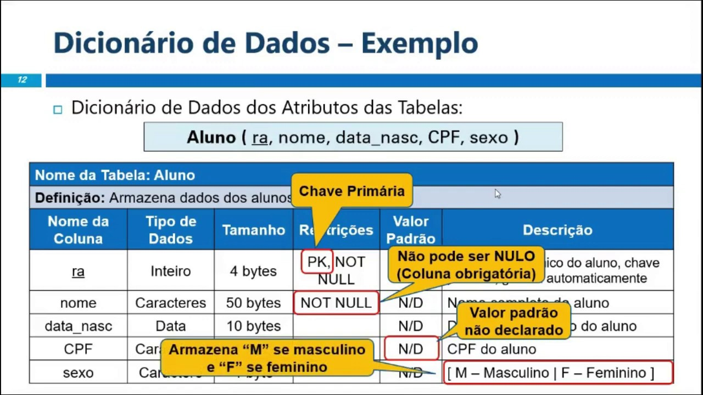
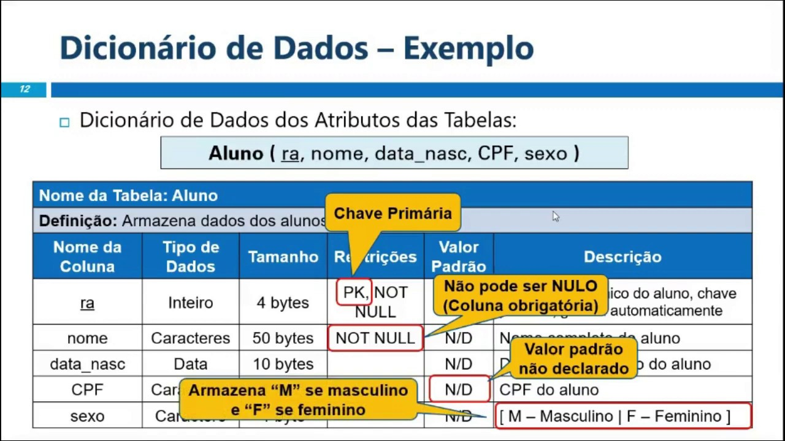

Oquê é um SGBD?
Quando falamos em banco de dados, um conceito central é o de SGBD — Sistema Gerenciador de Banco de Dados. Esse sistema é um software de uso geral que facilita a definição, construção, manipulação e o compartilhamento de bases de dados entre vários usuários e aplicações. Ele remove da aplicação a responsabilidade de gerenciar fisicamente os arquivos de dados, de modo que os dados fiquem organizados de forma padronizada (tabelas, esquemas, restrições, integridade etc.), facilitando o armazenamento, consulta, atualização e persistência. Em termos práticos, o SGBD dá suporte a sistemas de informação, sites, aplicações corporativas — ou seja, praticamente toda aplicação que precise guardar, buscar e manter consistência de dados. A utilidade de um SGBD se evidencia quando tratamos volumes grandes de informações, múltiplos acessos concorrentes, necessidade de segurança, integridade, recuperação de falhas, e acesso por diferentes programas ou usuários — funções quase impossíveis de serem bem implementadas de forma manual com arquivos comuns.
Principais Banco de Dados

Há diversos sistemas de banco de dados amplamente usados — cada um com suas características específicas. Por exemplo, MySQL é um SGBD muito popular que usa o modelo relacional e a linguagem SQL como interface, sendo usado em sites, aplicações web, serviços corporativos, etc. Outro exemplo de SGBD conhecido é PostgreSQL — um sistema de código-aberto, robusto, que suporta consultas complexas, integridade transacional, chaves estrangeiras, visões, gatilhos, e até extensões como PostGIS para dados georreferenciados. Além desses, há bancos NoSQL — sistemas que não se baseiam no modelo relacional tradicional e organizam dados por documentos, grafos, pares chave-valor etc. Esses bancos são úteis para cenários com dados não estruturados ou quando se busca maior escalabilidade horizontal. A escolha do banco de dados depende da necessidade do projeto: volume de dados, tipo de dados (estruturados ou não), demanda de consultas complexas, integridade e relacionamentos, ou necessidade de escalabilidade e flexibilidade.

Dicionário de dados
Dentro de um banco de dados, existe o conceito de dicionário de dados (data dictionary, em inglês) — que é um repositório de metadados ou “dados sobre os dados”. Ele contém descrições das estruturas do banco: tabelas, campos (atributos), tipos de dados, restrições, chaves, índices, relacionamentos, entre outros. O dicionário de dados é essencial porque define formalmente como as informações serão armazenadas e manipuladas, garantindo que todos os usuários e aplicações acessem os dados de forma padronizada e consistente. Ele também ajuda a manter a integridade e a coerência dos dados, e serve como referência para desenvolvedores e administradores do banco.
 


Modelagem de Banco de Dados
Antes de implementar um banco de dados, geralmente realiza-se uma modelagem de banco de dados — processo de organizar e planejar as estruturas de dados com base nas necessidades do sistema: quais entidades (por exemplo “Usuário”, “Pedido”, “Produto”) existem, quais atributos essas entidades têm, e como elas se relacionam. O modelo mais usado para essa fase conceitual é o Modelo Entidade-Relacionamento (MER). O MER permite representar graficamente entidades, atributos e relacionamentos entre entidades — o que torna mais fácil visualizar a estrutura lógica dos dados antes de transformá-la em tabelas físicas. A partir do MER geramos o esquema lógico e, posteriormente, o esquema físico do banco, adaptado ao SGBD escolhido.

Diagrama DER
Um diagrama concretizando a modelagem com MER muitas vezes é chamado de DER (Diagrama Entidade-Relacionamento) — ele é a representação gráfica do modelo conceitual, mostrando entidades (como tabelas a serem criadas), seus atributos e os relacionamentos entre elas. Por exemplo, se estamos modelando um sistema de loja, poderíamos ter uma entidade “Cliente” com atributos como “id_cliente”, “nome”, “email”; outra entidade “Pedido” com “id_pedido”, “data”, “valor_total”; e um relacionamento entre Cliente e Pedido que indica que um cliente pode fazer vários pedidos. Esse relacionamento é representado graficamente com linhas/arcos e indicações de cardinalidade (por exemplo 1:N). Esse tipo de diagrama ajuda a garantir que o desenho do banco de dados reflita a realidade e os requisitos do sistema, e serve como base para a criação das tabelas e estruturas no SGBD.

Diagrama MER
Um diagrama concretizando a modelagem com MER muitas vezes é chamado de DER (Diagrama Entidade-Relacionamento) — ele é a representação gráfica do modelo conceitual, mostrando entidades (como tabelas a serem criadas), seus atributos e os relacionamentos entre elas. Por exemplo, se estamos modelando um sistema de loja, poderíamos ter uma entidade “Cliente” com atributos como “id_cliente”, “nome”, “email”; outra entidade “Pedido” com “id_pedido”, “data”, “valor_total”; e um relacionamento entre Cliente e Pedido que indica que um cliente pode fazer vários pedidos. Esse relacionamento é representado graficamente com linhas/arcos e indicações de cardinalidade (por exemplo 1:N). Esse tipo de diagrama ajuda a garantir que o desenho do banco de dados reflita a realidade e os requisitos do sistema, e serve como base para a criação das tabelas e estruturas no SGBD.
Entradas e Saídas analógicas
Digite as seguintes informações